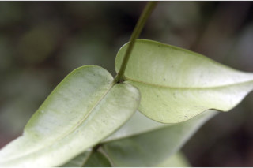
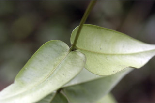
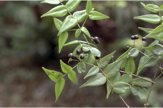
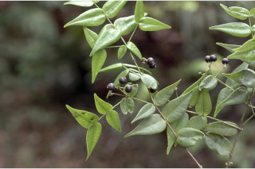

Shrubs ca. 4 m tall.
ಅಂದಾಜು 4 ಮೀ. ಎತ್ತರದ ಪೊದೆಗಳು.
ഏതാണ്ട് 4 മീറ്റര് ഉയരമുളള കുറ്റിച്ചെടികള്.
குத்துசெடிகளாக 4 மீ. உயரம் வரை வளரக்கூடியது
Bark greyish, finely fissured
ತೊಗಟೆ ಬೂದು ಬಣ್ಣದಲ್ಲಿದ್ದು ನಯವಾದ ಸೀಳಿಕೆಗಳನ್ನು ಹೊಂದಿರುತ್ತದೆ.
നന്നായി വിണ്ടുകീറിയ, നരച്ച നിറത്തിലുളള പുറംതൊലി.
மரத்தின் பட்டை சாம்பல் நிறமானது, நுண்ணிய பிளவுகளுடையது.
Branches dichotomously spreading; branchlets terete, glabrous.
ಕವಲುಗಳು ದ್ವಿಭಜಿತವಾಗಿ ಹರಡಿರುತ್ತವೆ;ಕಿರುಕೊಂಬೆಗಳು ದುಂಡಾಕಾರದಲ್ಲಿದ್ದು ರೋಮರಹಿತವಾಗಿರುತ್ತವೆ.
യുഗ്മശാഖിതമായി പടരുന്ന ശാഖകള്; അരോമിലമായ, ഉരുണ്ട ഉപശാഖകള്.
இரட்டை கிளைகளாக (டைக்காட்டமஸ்) பரவுக்கூடியது; சிறிய நுனிக்கிளைகள் குறுக்குவெட்டுத் தோற்றத்தில் வளையமானது, உரோமங்களற்றது.
Leaves simple, opposite, decussate; petiole sessile or subsessile (ca. 0.2 cm long), glabrous; lamina 3.1-8.9 x 1.1-3.2 cm, ovate-lanceolate with tapering apex with obtuse tip, base rounded or subcordate, margin entire, coriaceous, glabrous; midrib slightly canaliculate; secondary_nerves obscure; tertiary_nerves obscure.
ಎಲೆಗಳು ಸರಳವಾಗಿದ್ದು, ಕತ್ತರಿಯಾಕಾರದ ಅಭಿಮುಖ ಜೋಡನಾ ವ್ಯವಸ್ಥೆಯ –ಲ್ಲಿರುತ್ತವೆ ಹಾಗೂ ತೊಟ್ಟುರಹಿತವಾಗಿ ಅಥವಾ ಉಪತೊಟ್ಟುರಹಿತ(ಅಂದಾಜು 0.2 ಸೆಂ.ಮೀ. ಉದ್ದ)ವಾಗಿರುತ್ತವೆ, ತೊಟ್ಟು ರೋಮರಹಿತವಾಗಿರುತ್ತವೆ; ಪತ್ರಗಳು 3.1-8.9 X 1.1 -3.2 ಸೆಂ.ಮೀ. ಗಾತ್ರ ಹೊಂದಿದ್ದು ಅಂಡ-ಭರ್ಜಿಯ ಆಕಾರದಲ್ಲಿದ್ದು ಹಂತ ಹಂತವಾಗಿ ಕಡಿದಾಗುತ್ತಾ ಹೋಗುವ ಚೂಪಲ್ಲದ ಮಾದರಿಯ ತುದಿ ಮತ್ತು ದುಂಡಾದ ಅಥವಾ ಉಪಹೃದಯಾಕಾರದಬುಡ ಹೊಂದಿರುತ್ತವೆ;ಅಂಚು ನಯವಾ -ಗಿರುತ್ತದೆ; ಪತ್ರಗಳು ತೊಗಲನ್ನೋಲುವ ಮಾದರಿಯಲ್ಲಿರುತ್ತವೆ ಮತ್ತು ರೋಮರಹಿತ -ವಾಗಿರುತ್ತವೆ; ಮಧ್ಯನಾಳ ಸ್ವಲ್ಪ ಮಟ್ಟಿನ ಕಾಲುವೆ ಗೆರೆ ಸಮೇತವಿರುತ್ತದೆ; ಎರಡನೇ ಮತ್ತು ಮೂರನೇ ದರ್ಜೆಯ ನಾಳಗಳು ಅಸ್ಪಷ್ಟ.
ലഘുവായ ഇലകള്, സമ്മുഖ, ഡെക്കുസേറ്റ് ക്രമത്തിലാണ്; അരോമിലമായ അവൃന്തമോ ഉപഅവൃന്തമോ (ഏതാണ്ട് 0.2 സെ.മീ നീളം) ആയ ഇലഞെട്ടുകള്; പത്രഫലകത്തിന് 3.1 സെ.മീ മുതല് 8.9 സെ.മീ വരെ നീളവും 1.1 സെ.മീ മുതല് 3.2 സെ.മീ വരെ വീതിയും, ഉപകോണാകാര അഗ്രത്തോടുകൂടിയ അണ്ഡകാര-കുന്താകൃതിയുമാണ്, പത്രാധാരം വൃത്താകാരമോ ഉപഹൃദയാകാരമോ ആണ്, അരികുകള് അവിഭജിതമാണ്, ചര്മ്മില പ്രകൃതം, അരോമിലമാണ്; മുഖ്യസിര ചെറുതായി ചാലുളളതാണ്; ദ്വിതീയ ഞരമ്പുകള് അപ്രസക്തമാണ്; ത്രിതീയ ഞരമ്പുകളും അപ്രസക്തമാണ്.
இலைகள் தனித்தவை, எதிரடுக்கமானவை, குறுக்குமறுக்குமானவை; இலைகாம்பு அற்றது அல்லது மிகச்சிறிய காம்புடையது (0.2 செ.மீ. நீளமானது), உரோமங்களற்றது; இலை அலகு 3.1-8.9 X 1.1-3.2 செ.மீ., முட்டை-ஈட்டி வடிவானது, அலகின் நுனி குறுகியது மற்றும் மழுங்கலானது, அலகின் தளம் வட்டமானது அல்லது சிறிய இதய (கார்டேட்) வடிவ பிளவுகளுடையது, அலகின் விளிம்பு முழுமையானது, கோரியேசியஸ், உரோமங்களற்றது; மையநரம்பு மேற்புறத்தில் அலகின் பரப்பைவிட பள்ளமானது; இரண்டாம் நிலை நரம்புகள் மற்றும் மூன்றாம் நிலை நரம்புகள் தெளிவற்றது.
Inflorescence long peduncled (2 cm long) umbels, subterminal and axillary; flowers blue
ಪುಷ್ಪಮಂಜರಿಗಳು ಉದ್ದವಾದ ವೃಂತ(2 ಸೆಂ.ಮೀ.)ಗಳನ್ನುಳ್ಳ,ಉಪತುದಿ ಅಕ್ಷಾಕಂಕುಳಿ -ನಲ್ಲಿರುವ ಪೀಠಛತ್ರ ಮಾದರಿಯದಾಗಿರುತ್ತವೆ;ಹೂಗಳು ನೀಲಿ ಬಣ್ಣ ಹೊಂದಿರುತ್ತವೆ.
നീലനിറത്തിലുളള പൂക്കള്; നീളമുളള പൂങ്കുലത്തണ്ടുളള (2 സെ.മീ നീളം), ഉപഉച്ഛസ്ഥവും കക്ഷീയവുമായ ഛത്രമജ്ഞരി പൂങ്കുലകളിലുണ്ടാകുന്നു.
மஞ்சரி நீண்ட காம்புடையது (2 செ.மீ. நீளமுடையது) அம்பல், தண்டின் நுனிக்கு அருகாமையில் மற்றும் இலைக்கோணங்களில் அமைந்தவை; மலர்கள் நீல நிறமானது.
Berry, 0.4-0.5 cm diameter, globose; seed 1.
ಬೆರ್ರಿಗಳು 0.4-0.5 ಸೆಂ.ಮೀ.ವ್ಯಾಸ ಹೊಂದಿದ್ದು ಗೋಳಾಕಾರದಲ್ಲಿರುತ್ತವೆ ಮತ್ತು ಒಂದು ಬೀಜವನ್ನೊಳಗೊಂಡಿರುತ್ತವೆ.
ഒറ്റ വിത്തുളള കായ, 0.4 സെ.മീ മുതല് 0.5 സെ.മീ വരെ വ്യാസമുളള ഗോളാകാര ബെറിയാണ്.
முழுச்சதைகனி (பெர்ரி), 0.4-0.5 செ.மீ. குறுக்களவுடையது, கோளவடிவானது; விதை ஒன்று.


 

 
